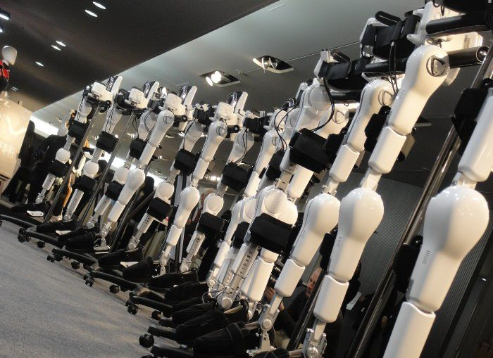

| Главная | Модели | |
|  | Экзоскелет позволяет увеличить силы человека, который его использует, а также восстановить утраченные способности. На данный момент экзоскелеты производятся в России, США, Швейцарии, Израиле и Японии. Впервые экзоскелет был разработан в США в 1960 годы и назывался Hardmann, однако из-за внушительного веса в 680 килограмм, этот проект был признан неудачным. |